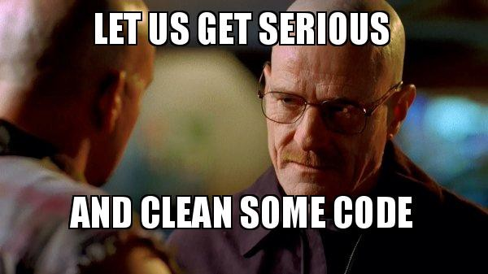
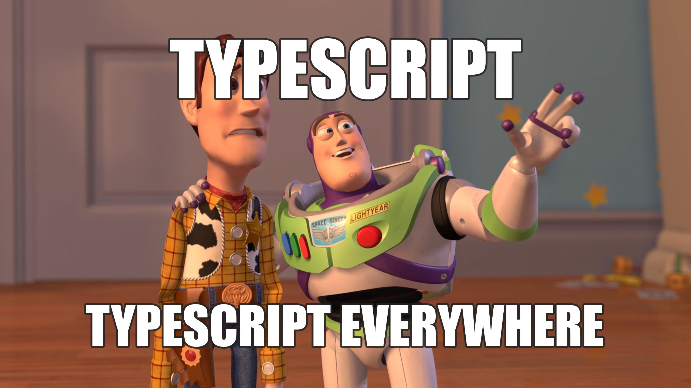
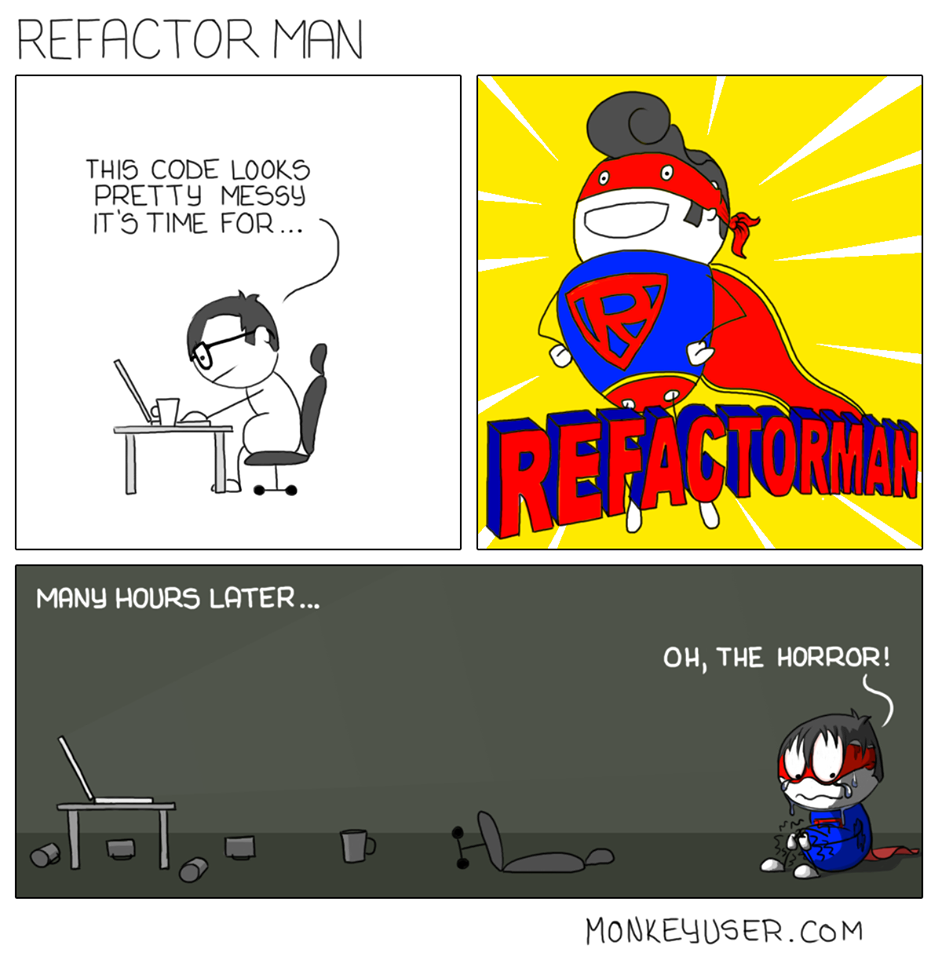
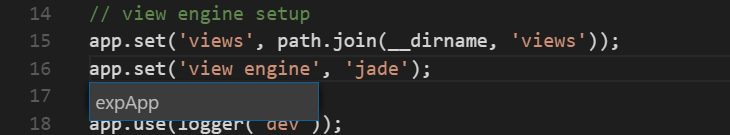
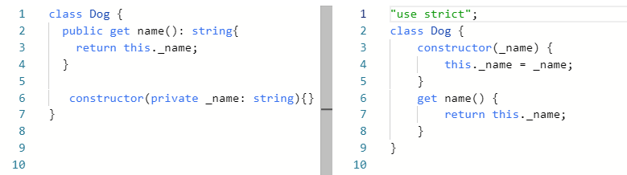
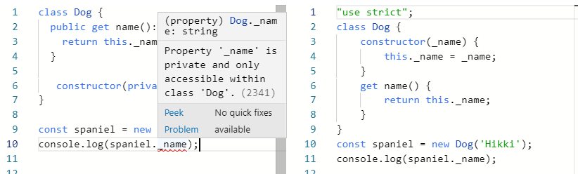
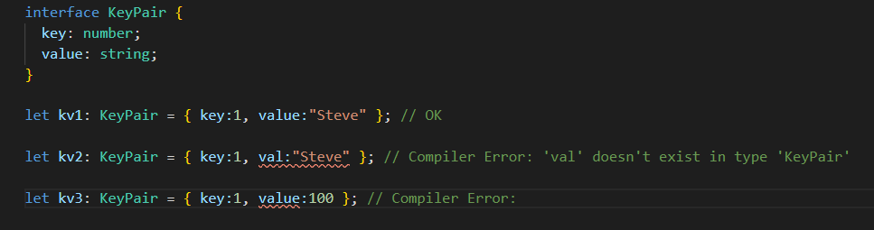

TypeScript is an open-source programming language developed and maintained by Microsoft. It is a strict syntactical superset of JavaScript, and adds optional static typing to the language.
6 reasons + bonus
why TypeScript is better than JavaScript

1. Code easier to understand
- What arguments does it accept?
- What value does it return?
- What external data does it require?
- What does it do with these arguments and external data in order to produce the return value?
- put a console.log(article), run the script in your browser, (maybe click through the UI a bit), and read the log;
- see where the function is used and from there track down what data is put into all of its occurrences;
- ask your colleague that recently had been working on this code (while hoping that they are still alive, online, and remember that code);
- assume that article is like what you think it is, and just hope it works.
2. Code easier and faster to implement
- Create function, make up its constructor arguments, write the remaining code.
- If it requires any external or sophisticated data (like user or articles), guess how will it look like, keep it in your own memory and use it like that in the code.
- Put the component into your app and pass props into it.
- Test it, either manually or with unit tests. (You need to make sure that it works how it should work.)
- If something isn’t right, go back to your code, try figuring out what’s wrong with it, fix it, and go back to step no. 4.
- Create function, define its’ type definition, and implement it.
- If it requires any external or sophisticated data, look up their interfaces and reuse them (fully or partially).
- Put the component into your app and pass props into it.
- That’s it. (If you matched the typedefs correctly between the caller and the callee, everything should work flawlessly. The only thing you have to test now is the actual business logic of your component.)
3. Code easier to refactor
just one click of “Rename Symbol”
4. Less bugs
5. Less boilerplate tests
6.The OOP is much more real than in a javascript
Access-Control

Interface
Bonus

Aids the developer in having the correct workflow
TypeScript has one problem...